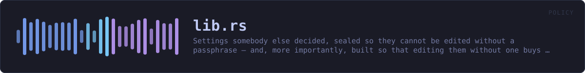

crates/veilvoice-policy/src/lib.rs
veilvoice-policy · 165 lines · read the source here · or on GitHub
Settings somebody else decided, sealed so they cannot be edited without a passphrase, and, more importantly, built so that editing them without one buys nothing worth having.
The design decision this crate turns on
A policy file has an obvious problem. To apply a policy at every launch, the program has to be able to read it at every launch. If reading it needs a passphrase, the user types one every time, and if it does not, then anybody who can write the file can rewrite the policy.
The usual answers are a privileged daemon holding the key, or a key hidden in the binary, and neither is honest here: this project needs no privileges, and a key in a binary anybody can download is not a key.
So the constraint is moved into the shape of the data. A requirement can only make VeilVoice stricter. There is no requirement that turns encryption off, none that lowers the de-identification floor, none that disables the app lock, and there is no room in Requirement to express one, because every variant is a tightening and the type has no other kind.
Then somebody who edits the plain policy file without the passphrase can do exactly one thing: make this machine's VeilVoice more restrictive than its owner asked for. That is a nuisance, and it is not a privacy failure: which is the failure this project exists to avoid. The passphrase-sealed copy is what proves the policy is the one the administrator wrote; the shape of the type is what makes the answer survive the seal not having been checked yet.
What the seal is for, and what it is not
Policy::seal uses the same container as everything else here: Argon2id over the passphrase, X25519 with ML-KEM-768 for the hybrid modes, XChaCha20-Poly1305 for the contents. verify opens the sealed copy and compares it against the plain one, which is how anybody with the passphrase establishes that the policy in force is the policy that was written.
It is not enforcement. Anything with write access to VeilVoice's own executable can replace VeilVoice, and no file it reads can prevent that. Anything running as the user can delete the policy entirely. What a sealed policy gives is a policy that cannot be quietly rewritten into something weaker, and that is a smaller claim than "enforced" on purpose. See SCOPE.
Detecting deletion is veilvoice-guard's job, not this one's: put the policy files in a tamper manifest and the removal shows up there.
Reading a policy costs nothing
Policy::load reads the plain file and applies it. It never asks for a passphrase, never blocks, and reports the seal as Verification::Unchecked rather than pretending to have looked. A front end that wants the stronger statement calls verify when it has a passphrase to offer.
In plain words
This lets settings be locked down, and only in one direction.
Someone setting up a machine for other people can seal a set of settings so they can be made stricter but never looser. Nobody needs a password to read what the rules are -- only to change them -- because a rule people cannot see is a rule they will trip over.
WHAT THIS FILE CONTAINS
165 lines defining 4 functions (0 public), 1 type and 2 constants. Everything below is read out of the source, so it cannot disagree with the code.
The types it owns.
enum Errorline 92 · Everything that can go wrong in this crate.
WHAT CALLS WHAT
The functions this file defines, and the calls between them. An edge means the callee's name appears, called, inside the caller's body. This is a syntactic reading, not a type-resolved one.
The same graph as Mermaid source
%%{init: {"theme":"base","themeVariables":{"background":"#1a1b26","primaryColor":"#1f2335","primaryTextColor":"#c0caf5","primaryBorderColor":"#7aa2f7","secondaryColor":"#16161e","tertiaryColor":"#16161e","lineColor":"#737aa2","textColor":"#c0caf5","mainBkg":"#1f2335","nodeBorder":"#7aa2f7","clusterBkg":"#16161e","clusterBorder":"#2f3549","fontFamily":"ui-monospace, SFMono-Regular, Consolas, monospace","fontSize":"14px"}}}%%
flowchart TD
n_from["Error::from<br/>line 102"]
n_from["Error::from<br/>line 108"]
n_fmt["Error::fmt<br/>line 114"]
n_source["Error::source<br/>line 124"]
click n_from href "https://github.com/tilas01/veilvoice/blob/main/crates/veilvoice-policy/src/lib.rs#L102" "open the source"
click n_from href "https://github.com/tilas01/veilvoice/blob/main/crates/veilvoice-policy/src/lib.rs#L108" "open the source"
click n_fmt href "https://github.com/tilas01/veilvoice/blob/main/crates/veilvoice-policy/src/lib.rs#L114" "open the source"
click n_source href "https://github.com/tilas01/veilvoice/blob/main/crates/veilvoice-policy/src/lib.rs#L124" "open the source"
classDef helper fill:#1f2335,stroke:#bb9af7,color:#c0caf5
class n_from,n_from,n_fmt,n_source helperThis site loads no third-party script, so it cannot run Mermaid; the diagram above is the same nodes and edges drawn by the generator instead. GitHub renders the source below directly.
ITEMS
| Item | Line | Documentation |
|---|---|---|
VERSION pub const | 74 | Crate version string, surfaced in the About panel. |
SCOPE pub const | 80 | What a sealed policy is worth, in the words a front end should show. |
Error pub enum | 92 | Everything that can go wrong in this crate. |
Error::from fn | 102 | |
Error::from fn | 108 | |
Error::fmt fn | 114 | |
Error::source fn | 124 |